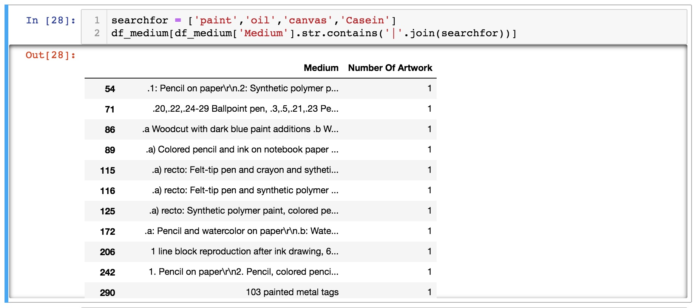
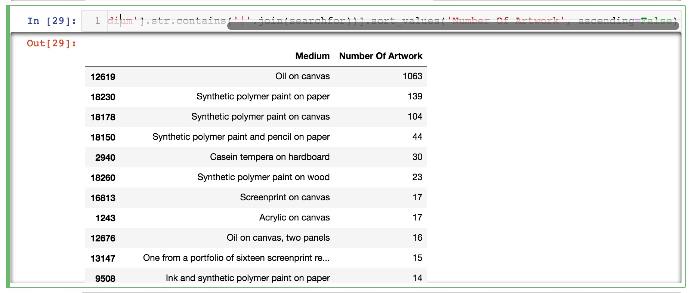

Data Visualization Processing the MoMA Collection

Project Description
This data visualization module is inspired by MoMA’s data dump in 2015. MoMA had release the database of their collection which contains over 130,000 pieces of artwork over the timespan of 150 years. In this session, we will learn to visualise MoMA collection similar to what Oliver Roeder had done at FiveThirtyEight, perhaps we will even take it further. This session will allow us to dive into Pandas, Plot.ly, and python regular expression a lot more and get into some of the more intermediate level of data processing. In the course this this workshop, we will try to re-create some of Oliver’s visualizations such as these.
Step 1
Import Libraries and Data
This workshop module assumes you have already installed all the necessary python libraries, if you have not done so, please go back to the previous module. What we will need for this session is Plotly and Pandas, and we will run the entire session on Jupyter.
First import all the libraries by executing the following code.
import plotly.plotly as py
import plotly.graph_objs as go
from plotly.offline import download_plotlyjs, init_notebook_mode, iplot
from collections import defaultdict
import pandas as pd
init_notebook_mode(connected = True)
Import the csv file by executing the following code.
df_moma = pd.read_csv('https://github.com/MuseumofModernArt/collection/blob/master/Artworks.csv')
If you want to speed things up a little, download the csv file to your local drive and place it in the same folder as where you’re running Jupyter Notebook, then execute this code.
df_moma = pd.read_csv('./Artworks.csv')
Execute df_moma to see what’s inside this variable.

Upon inspecting the data, you should see that there’re large number of records that has the value of NaN, which in computer science lingo means “not a number”, which also means there is an invalid record in the dataset. So before we begin to do anything beyond this, we need to for fill those records up with something else other than a NaN because it will cause issues with Pandas and Python down the line. We use a function call fillna to replace any NaN value with something we desinate.
df_moma[['Artist','Nationality','BeginDate',
'Gender','Medium']] = df_moma[['Artist','Nationality','BeginDate',
'Gender','Medium']].fillna(value='Unknown')This line of code lets us look into each of these columns and find any NaN values and replace them with the word “Unknown”. We’re now ready to move forward with more advanced date processing techniques.
Step 2
Data Processing
Now that we have imported the whole 130,000 records of MoMA’s collection, say we want to see which is their largest collection, we can do something like - look at every record and see what “Medium” it uses and count them all. And finally give me a sorted result which tells me what is their biggest collection is based on the Medium.
To do this we need to call a Function that allows us to track duplicates. We have used this in previous sessions and it looks something like this. Type the following in and execute.
def list_duplicates(seq):
tally = defaultdict(list)
for i, item in enumerate(seq):
tally[item].append(i)
return((key,locs) for key, locs in tally.items() if len(locs)>0)At this point, it’s ok if you don’t know how this function works. There’re quite a bit of short form writing in there so it’s a bit harder to read than usual. For now, treat it like a blackbox or a copy / paste button where you know exactly what it does and what you need to do to call the function. For more information on Python Functions, click the following for a deep dive into the subject.
Now let’s call the function and have it list all the unique art media in the collection.
medium = []
for dup in sorted(list_duplicates(df_moma['Medium'].astype(str))):
medium.append([dup[0], len(dup[1])])
labels = ['Medium', 'Number Of Artwork']
df_medium = pd.DataFrame.from_records(medium, columns=labels)First you need to create an empty list to store all the items being found. The next line is a bit complex, it first passes the column with header [‘Medium’] to the function while ensuring it’s passed as a string. The function sends back with a list of lists, first listing all the unique medium names, and then the row number in which the medium name had been found. So we just need to store all that information into the medium variable. (dup[1]) is a list of all the row numbers where the medium is found, len(dup[1]) is the length of that list, which essentially tells me how many times that medium is found in the collection.
Next we give the new list a label and create a new Pandas DataFrame for it. So now when you type in the following, you can show the dataframe and have it be sorted at the same time.
df_medium.sort_values('Number Of Artwork', ascending=False)

So now we know the largest collection MoMA has is photography and a large number of artwork have unknown media type.
Now let’s say you want to look for specific keywords in the collection that you would associate with paintings, you can do something like this.
searchfor = ['paint','oil','canvas','Casein']
df_medium[df_medium['Medium'].str.contains('|'.join(searchfor))]
Now combine the sort function with the search function and write it all at once.
df_medium[df_medium['Medium'].str.contains('|'.join(searchfor))].sort_values('Number Of Artwork', ascending=False)

Now let’s try to use the same method of finding duplicates to see which artist has the largest number of work at MoMA.
artists = []
for dup in sorted(list_duplicates(df_moma['Artist'].astype(str))):
artists.append([dup[0], len(dup[1]),
df_moma.loc[dup[1][0]]['Nationality'],
df_moma.loc[dup[1][0]]['BeginDate'],
df_moma.loc[dup[1][0]]['EndDate'],
df_moma.loc[dup[1][0]]['Gender'],
df_moma.loc[dup[1][0]]['Classification']])
labels = ['Artist', 'Number Of Artwork', 'Nationality', 'BirthYear', 'DeathYear', 'Gender','Classification']
df_artists = pd.DataFrame.from_records(artists, columns=labels)
df_artists.sort_values('Number Of Artwork', ascending=False)
We can also single out individual artist and look at the variety of work based on medium.
df_picasso = df_moma[df_moma['Artist']=='Pablo Picasso']
picasso = []
for dup in sorted(list_duplicates(df_picasso['Medium'].astype(str))):
picasso.append([dup[0], len(dup[1])])
labels = ['Type of Work', 'Number Of Artwork']
df_picassoWork = pd.DataFrame.from_records(picasso, columns=labels)
df_picassowork.sort_values('Number Of Artwork', ascending=False)
So it turns out, MoMA has over one thousand pieces of art work by Picasso and almost 25% of that are litographic work!
Step 3
Date Created VS Date Aquired
We are diving deeper and deeper into data processing with Pandas as we continue to work with the same data set. This next exercise will dive right into one of the graphs Oliver Roeder had done at FiveThirtyEight in which he graphed the year in which a painting had been painted versus the year in which the painted had been acquired by MoMA. It’s a simple idea but to actually create this graph, it’s anything but simple. We will have to rely on everything we have learned so far and more!
Let’s open up a new notebook start fresh, and import the following packages.
import plotly.plotly as py
import plotly.graph_objs as go
from plotly.offline import download_plotlyjs, init_notebook_mode, iplot
from collections import defaultdict
import pandas as pd
import re, datetime
init_notebook_mode(connected = True)Import the CSV file as we did before, again, your choice if you want to load it remotely or locally.
df_moma = pd.read_csv('https://github.com/MuseumofModernArt/collection/blob/master/Artworks.csv')
df_moma = pd.read_csv('./Artworks.csv')
And again, let’s clean up all the missing values which is represented by NaN and fill that with the text Unknown. For more on how to work with Missing Data in Pandas, click here.
df_moma[['Artist','Nationality','Date','BeginDate','Gender','DateAcquired']] = df_moma[['Artist','Nationality','Date','BeginDate','Gender','DateAcquired']].fillna(value='Unknown')
Now let’s look at the 2 column of data we’re interested in working with, DateAcquired and Date, you should see something like the following.
df_moma[['DateAcquired','Date']]
Immediately we notice that the date format is diffent between the 2 columns, and even within each column, there are a lot of inconsistensies in the format. This is one of the quintessential chores in data science to search through and clear data for inconsistencies.
To do that let’s talk through what the approach is, and simplify the problem by only looking at one of the columns first. The Date Acquired seems to be a bit more consistent at first glance, it seems most of the rows have this xxxx-xx-xx format. So let’s take a deeper look into this.
for row in (df_moma.DateAcquired):
q = re.search(r'(\d{4})-(\d{1,2})-(\d{1,2})$', row)
if not q:
print(row)df_moma.DateAcquired is a short form to only show the DataAcquired column of the df_moma dataframe. It can also be written as df_moma[‘DateAcquired’], it’ll give us the same thing. The for row in x loop goes into every single row of data. q = re.search(r’(\d{4})-(\d{1,2})-(\d{1,2})$’, row) is to use a very powerful function call Regular Expression to sift through the data looking for patterns. Regular Expression is a rabbit hole, it was invented in the 1950s as a mathematical formal language and people have built search engines and word processors with it. For a deeper understanding, I’d recommend doing a more extensive reading on this subject. For a deeper look at how to use it pragmatically with python, click the following link.
But let’s try to break it down so we have a basic understanding.
re.search(r'(\d{4})-(\d{1,2})-(\d{1,2})$', row) is made up of re.search(a,b), which is to look for pattern a inside b. The r'' quote is a convention that defines everything within the quotes are “raw” strings. \d is any digit between 0-9. Used along with {4} will look for any 4 digits repeated 4 times. \d{1,2} means look for digits repeated 1 to 2 times. So in human language, look for this pattern, digits that has been repeated 4 times, then a hyphen, then 1 to 2 digits, then another hyphen, then another 1 to 2 digits. Put this whole thing under a variable q means, if the search is positive, return True and store that in q.
Thus, if not q: means if the pattern didn’t match, then print(row) show me the result.
So from the results we see a lot of Unknown, but unless we go through each entry one by one, we can’t be sure if that is the only deviation, so let’s add to the funciton and identify all the unique variations.
dateAcquired_nullValue = []
for row in (df_moma.DateAcquired):
q = re.search(r'(\d{4})-(\d{1,2})-(\d{1,2})$', row)
if not q:
print(row)
dateAcquired_nullValue.append(row)We first create an empty list and inside the loop, pass all the values that doesn’t match the pattern into the variable. So we end with a list of all the deviations. We then use a function to look for unique values.
def list_duplicates(seq):
result = []
for item in seq:
if item not in result:
result.append(item)
return result
list_duplicates(dateAcquired_nullValue)Here, a list_duplicate function is created to look for unique items. And low and behold, we get this as a result - ['Unknown', '1977-08', '1975-01', '1994', '1961']. So other than Unknown, we also have 2 other date format we have to account for.
Now the Date column seems like it’s a lot more complex. Just by scrolling through the data we can already see there is xxxx, xxxx-xx, c. xxxx, c. xxxx-xx, xxxx-xxxx… so we will have to come up with another regular expression pattern to sift through that data.
date_nullValue = []
for row in (df_moma.Date):
q = re.search(r'^.*(\d{4}).*', row)
if not q:
print(row)
date_nullValue.append(row)For this search pattern re.search(r'^.*(\d{4}).*', row), we can just concentrate on this part ^.*(\d{4}).*. ^ forces the search pattern right at the start of the string. . is any character and * is repeated however many times. So reading this together ^.*(\d{4}) is it looks for a 4 digit number and ignore anything that comes before, ^.*(\d{4}).* thus, adding another .* after that is to say, look for a 4 digit code and ignore anything that comes before and after.
def list_duplicates(seq):
result = []
for item in seq:
if item not in result:
result.append(item)
return result
list_duplicates(date_nullValue)You should see a big list of deviations that would be very hard to sift through without the use of regular expression.
Now that we know the data has these many inconsistencies, let’s get rid of them. But as a general practice, we don’t necessarily want to delete records. Instead, we can create a copy of the data with a filter so we get a clean dataset. To do this we first create 2 lists that contains all the inconsistent date formats.
dateAcquired_nullValueDup = list_duplicates(dateAcquired_nullValue)
date_nullValueDup = list_duplicates(date_nullValue)We’re essentially just repeating the same function earlier but now passing the results into a new variable. Then we do this.
df_moma_known = df_moma[~df_moma['DateAcquired'].isin(dateAcquired_nullValueDup)]Let’s break it down again. dateAcquired_nullValueDup is a list of filter words. df_moma['DateAcquired'].isin() is a way to pass the column of data and see if any of the rows is in whatever has been passed into isin(). So essentially this will give a list of True False value showing us all the records that is in that filter list. However, we want a record that is not in the filter list, so we add that little ~ tilda in front.
So we have reduced the dataframe by using a list of keywords as filter. Now let’s do that again with the other list.
df_moma_known_known = df_moma_known[~df_moma_known['Date'].isin(date_nullValueDup)]Now although we have cleaned up the data by eliminated all the null or unknown value records, we have yet to change the date format to something that can be used. Since we can say for sure that the year is the only consistent value between the 2 columns, we need to find a way to extract that information. We’ll do it with regular expression again.
datePatternToExtract = r'^.*(\d{4}).*'
dateAcquiredPatternToExtract = r'^(\d{4}).*'
df_moma_known_known['DateCreated'] = df_moma_known_known['Date'].str.extract(datePatternToExtract)
df_moma_known_known['DateAcquiredFormtted'] = df_moma_known_known['DateAcquired'].str.extract(dateAcquiredPatternToExtract)For this part, we’re using a native Pandas function str.extract in combination with regular expression to create a new column with the proper year value. We first create 2 patterns, 1 for the Date column and the other for the Date Acquired column. The patter is very similar except for the beginning. Then we created 2 new columns and pass all the extracted values there.
When you execute this, you might get an error message that reads something like this,
A value is trying to be set on a copy of a slice from a DataFrame.
Try using .loc[row_indexer,col_indexer] = value insteadYou can ignore the message and move on. The last step in cleaning up the date format is to get rid of a single row of data that has the wrong date. The acquisition date says it’s from the 1200’s but you know that can’t be correct because the museum didn’t exist. Execute this code to get rid that specific record.
df_moma_known_known.drop(129985, inplace=True)
Since there’re still over 120,000 records, let’s further filter the data and then do the visualization.
medium = []
for dup in sorted(list_duplicates(df_moma_known_known['Medium'].astype(str))):
medium.append([dup[0], len(dup[1])])
labels = ['Medium', 'Number Of Artwork']
df_medium = pd.DataFrame.from_records(medium, columns=labels)
df_medium.sort_values('Number Of Artwork', ascending=False)You can choose to filter the records in different ways but let’s say for now we will do it by medium. We’ll first make a list of all the medium and show its collection size. Then say we will make a few new dataframes based on medium.
df_Gelatin = df_moma_known_known[df_moma_known_known['Medium']=='Gelatin silver print']
df_Lithograph = df_moma_known_known[df_moma_known_known['Medium']=='Lithograph']
df_Oil = df_moma_known_known[df_moma_known_known['Medium']=='Oil on canvas']
df_Albumen = df_moma_known_known[df_moma_known_known['Medium']=='Albumen silver print']Now to create the actual graph, we’ll use a place holder variable so if you want to change to a different medium, you just need to change the first variable.
df_placeholder = df_Oil
trace = go.Scatter(
y = df_placeholder['DateAcquiredFormtted'].tolist(),
x = df_placeholder['DateCreated'].tolist(),
mode = 'markers',
text = df_placeholder['Title'].tolist(),
marker = dict(
size = 10,
color = 'rgba(200, 200, 200, .3)',
)
)
layout = go.Layout(
title = 'MoMA Year Acquired VS Year Created
'+ df_placeholder.iloc[0]['Medium'] +'
' + str(len(df_placeholder)),
hovermode = 'closest',
yaxis = dict(
title = 'Date Acquired',
ticklen = 5,
zeroline = True,
gridwidth = 2,
),
xaxis = dict(
title = 'Date Created',
ticklen = 5,
gridwidth = 2,
),
showlegend = False,
)
fig = go.Figure(data = [trace], layout=layout)
iplot(fig, filename='MoMA Year Acquired VS Year Created'+ df_placeholder.iloc[0]['Medium'])Congratulations for completing this step. Now you’re ready to move on to the next step.
Step 4
MoMA Collection by Size
For this exercise we will go back to what Oliver Roeder had done at FiveThirtyEight and look at the visualization that compare the size of the artwork in the collection.
Again we’ll start fresh with a new notebook and import all the libraries.
import plotly.plotly as py
import plotly.graph_objs as go
from plotly.offline import download_plotlyjs, init_notebook_mode, iplot
from collections import defaultdict
import pandas as pd
import re, datetime
init_notebook_mode(connected = True)And we bring in the csv file.
df_moma = pd.read_csv('https://github.com/MuseumofModernArt/collection/blob/master/Artworks.csv')
df_moma = pd.read_csv('./Artworks.csv')
And again, let’s clean up all the missing values.
df_moma[['Artist','Nationality','Date','BeginDate','Gender','DateAcquired']] = df_moma[['Artist','Nationality','Date','BeginDate','Gender','DateAcquired']].fillna(value='Unknown')
Remember that there’re over 130,000 records and it’s simply not feasible to visualize every single item in the collection, we will make an arbitrary decision and say the visualization will be based on their classification, and in this case, the architecture collection. You can change this to what ever you want. Say if you want to look at the sizes of all of Picasso’s work, it’s the same procedure.
First look at how many classifications there are that are related to architecture. Bring in the function that looks for duplicates.
def list_duplicates(seq):
tally = defaultdict(list)
for i, item in enumerate(seq):
tally[item].append(i)
return((key,locs) for key, locs in tally.items() if len(locs)>0)Then call the function and have it list all the unique classifications.
classification = []
for dup in sorted(list_duplicates(df_moma['Classification'].astype(str))):
classification.append([dup[0], len(dup[1])])
labels = ['Classification', 'Number Of Artwork']
df_classification = pd.DataFrame.from_records(classification, columns=labels)
df_classification.sort_values('Number Of Artwork', ascending=False)From this list you can see there is a Mies van der Rohe Archive, an architecture collection, and a Frank Lloyd Wright Archive, all related to architecture. So we’ll create a new dataframe that would use those terms as filter words.
searchfor = ['Mies van der Rohe Archive','Architecture','Frank Lloyd Wright Archive']
df_moma_archi = df_moma_notNull[df_moma_notNull['Classification'].str.contains('|'.join(searchfor))]Since we know we will base our on the Height and Width columns, we need to ensure we don’t have any missing data.
df_moma_archi_hasSize = df_moma_archi[~df_moma_archi['Height (cm)'].isnull()]
df_moma_archi_hasSize = df_moma_archi_hasSize[~df_moma_archi_hasSize['Width (cm)'].isnull()]Now the data should be ready to pass to Plotly.
df_placeholder = df_moma_archi_hasSize
hovertext = []
for i,row in df_placeholder.iterrows():
hovertext.append(row['Artist'] + '
' + row['DateAcquired']+ '
' + row['Title'] )
trace = go.Scatter(
y = df_placeholder['Height (cm)'].tolist(),
x = df_placeholder['Width (cm)'].tolist(),
mode = 'markers',
text = hovertext,
)
layout = go.Layout(
title = 'MoMA Drawing Size
'+ '
' + str(len(df_placeholder)),
hovermode = 'closest',
yaxis = dict(
title = 'Height (cm)',
ticklen = 5,
zeroline = True,
gridwidth = 2,
),
xaxis = dict(
title = 'Width (cm)',
ticklen = 5,
gridwidth = 2,
),
showlegend = False,
paper_bgcolor='rgba(0,0,0,0)',
plot_bgcolor='rgba(0,0,0,0)'
)
fig = go.Figure(data = [trace], layout=layout)
plot(fig, filename='MoMA Drawing Size scattered')Now let’s not stop here because we only got a scatter plot, but we want to actually see the rectangles. To have plotly draw shapes, we’ll need to learn about the syntax. For a deep dive into Plot.ly shapes, click here.
Essentially we learn that shapes are drawn in the layout section rather than in the data section. And shapes are drawn as a dictionary like this. Dictionary is a type of data structure in Python. For a deep dive on the subject, click here.
'shapes': [
# unfilled Rectangle
{
'type': 'rect',
'x0': 1,
'y0': 1,
'x1': 2,
'y1': 3,
'line': {
'color': 'rgba(128, 0, 128, 1)',
},
},
# filled Rectangle
{
'type': 'rect',
'x0': 3,
'y0': 1,
'x1': 6,
'y1': 2,
'line': {
'color': 'rgba(128, 0, 128, 1)',
'width': 2,
},
'fillcolor': 'rgba(128, 0, 128, 0.7)',
},
]So now we need to figure a way to create this dictionary. We know the shape dictionary has few parameters: type, x0, y0, x1, y1, line, and fillcolor. We know what the type should be, we know all of rectangles should start at (0,0), we know what line and fillcolor should be, so all we need is to pass the (x1,y1) location to this. In Python, we can create a dictionary like this.
keys = ['type','xref','yref','x0','y0','x1','y1','line','fillcolor']
values = ['rect','x','y',0,0,2,2,{'color': 'rgb(55,55,55)','width':1,},'rgba(55,55,55,0.5)']
temp = dict(zip(keys,values))And if we pass that variable to a plot we can get a single rectangle.
trace0 = go.Scatter(
x=[1.5, 3],
y=[2.5, 2.5],
text=['Rectangle reference to the plot',
'Rectangle reference to the axes'],
mode='text',
)
data = [trace0]
layout = {
'xaxis': {
'range': [0, 4],
'showgrid': False,
},
'yaxis': {
'range': [0, 4]
},
'shapes': [temp],
}
fig = {
'data': data,
'layout': layout,
}
iplot(fig, filename='shapes-rectangle-ref')So all we need to do is to create a list of dictionaries that will cycle through all the Height and Width data in the records and pass them to the dictionary.
rects = []
for i,row in df_placeholder.iterrows():
keys = ['type','xref','yref','x0','y0','x1','y1','line','fillcolor']
values = ['rect','x','y',0,0,
row['Width (cm)'],
row['Height (cm)'],
{'color': 'rgb(200,200,200)','width':1,},
'rgba(55,55,55,0.1)']
rects.append(dict(zip(keys,values)))Once that’s done, you can create the graph again with this new variable.
df_placeholder = df_moma_archi_hasSize
hovertext = []
rects = []
for i,row in df_placeholder.iterrows():
hovertext.append(row['Artist'] + '
' + row['DateAcquired']+ '
' + row['Title'] )
keys = ['type','xref','yref','x0','y0','x1','y1','line','fillcolor']
values = ['rect','x','y',0,0,
row['Width (cm)'],
row['Height (cm)'],
{'color': 'rgb(200,200,200)','width':1,},
'rgba(55,55,55,0.1)']
rects.append(dict(zip(keys,values)))
trace = go.Scatter(
y = df_placeholder['Height (cm)'].tolist(),
x = df_placeholder['Width (cm)'].tolist(),
mode = 'markers',
text = hovertext,
marker = dict(
size = 2,
color = 'rgba(255, 0, 0, .3)',
)
)
layout = go.Layout(
title = 'MoMA Drawing Size
'+ '
' + str(len(df_placeholder)),
hovermode = 'closest',
yaxis = dict(
title = 'Height (cm)',
ticklen = 5,
zeroline = True,
gridwidth = 2,
),
xaxis = dict(
title = 'Width (cm)',
ticklen = 5,
gridwidth = 2,
),
shapes = rects,
showlegend = False,
paper_bgcolor='rgba(0,0,0,0)',
plot_bgcolor='rgba(0,0,0,0)'
)
fig = go.Figure(data = [trace], layout=layout)
py.iplot(fig, filename='MoMA Drawing Size')Summary
What You have Learned
- How to create and assign value to a variable
- How to create and assign values a list
- How to create and assign values a list of lists
- How to bring data into Python as text or csv files
- How to create and use a counter
- How to write a basic function
- How to call a basic function
- Basic loop structure - how to use for-loops
- How to import packages in Python
- How to use basic functions of packages like Pandas, Plotly, BeautifulSoup
- How to create interactive plots with Plotly.